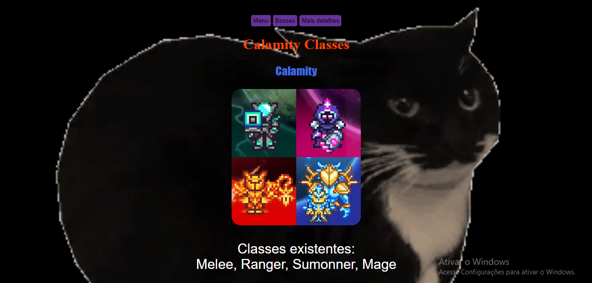
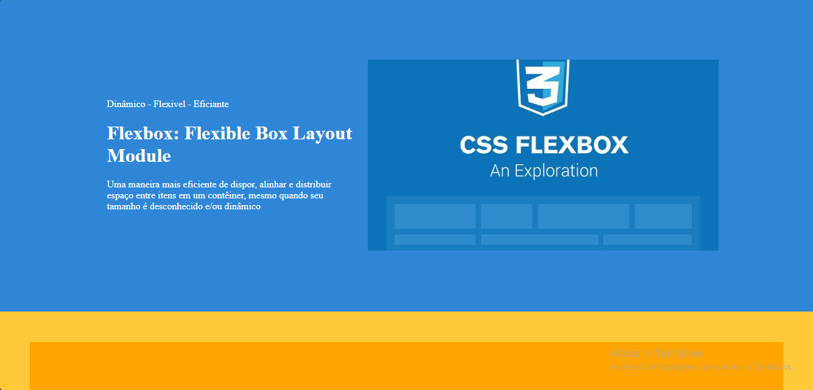

Projetos feitos por André Orocondo Lopes Aguirre

O menino calamitoso
Site feito em sala de aula sobre Calamity mod de Terraria

Dr. Stone
Site feito com conhecimentos aprendidos em sala

Flexbox
Site focado em Flexbox e com o intuito de apreder na pratica como funcina